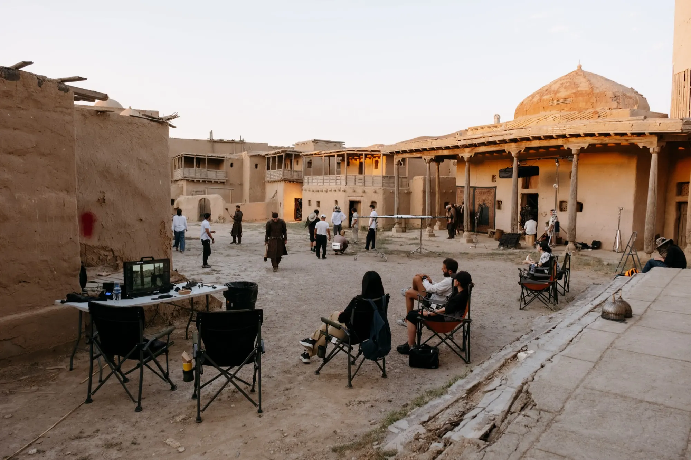
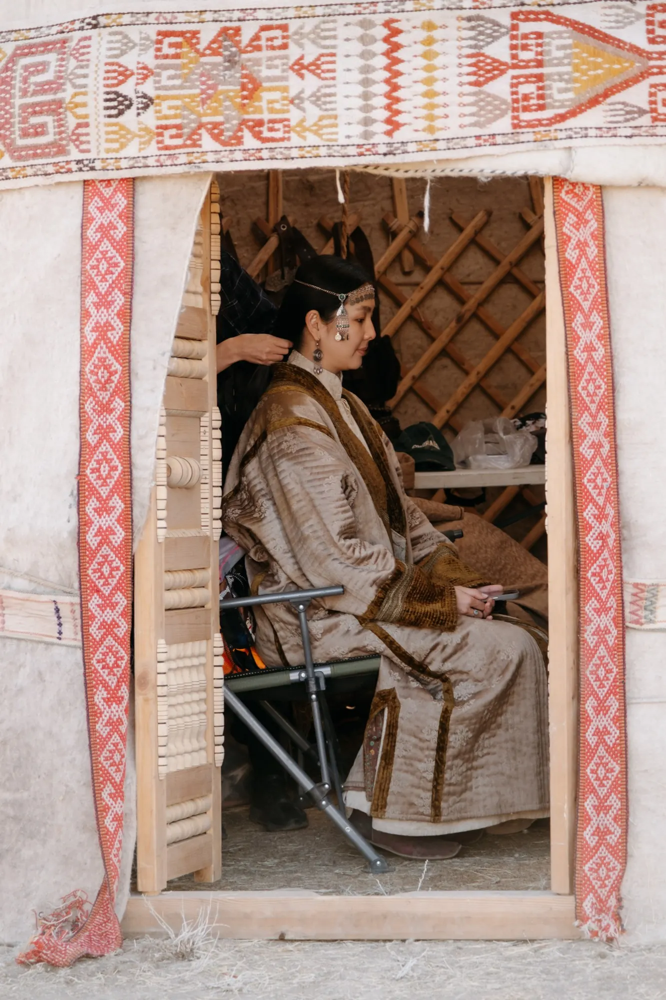

Kazakhstan is the ninth largest country in the world and almost none of it has been shot for advertising. The looks that cost a fortune to secure elsewhere are still unbooked here: open steppe to the horizon, the Tian Shan range on the edge of Almaty, desert and red canyons, salt flats, alpine lakes, and the concrete modernism of Soviet-era cities.
Almaty is the base. It is the country's largest city, it has the crews and the rental houses, and most of what you would want to film is reachable from it.
We have worked in this market since 2018 and shot more than 150 films for over 40 brands, among them Coca-Cola, Coke Studio Kazakhstan, AIFC, Givenchy, Haval and Exeed.
For a historical brand film for AIFC we took the production into the steppe: a village of mud brick and timber, yurts, period costume and a make-up department on the sand, shot through hard summer sun.


The point is not the pictures. It is that the sets, the permits to be there, the catering, the generators and the people who put a light on top of a yurt in forty degrees all had to be organised. That is the part you would be hiring us for.
Itemised budget, schedule, shift plan, call sheets.
Assembling a crew for the project: DoP, production designer, gaffer, stylists, first AD, production assistants.
Casting actors and extras, scouting and securing locations.
Camera and lighting rental, transport, crew catering, accommodation for location shoots.
The producer and the line producer control timing, safety and adherence to the plan on shoot days.
Hand-off of materials to post-production and a cost report.
Tell us what you need to see in frame and when you shoot. We reply within one working day with locations and a budget.